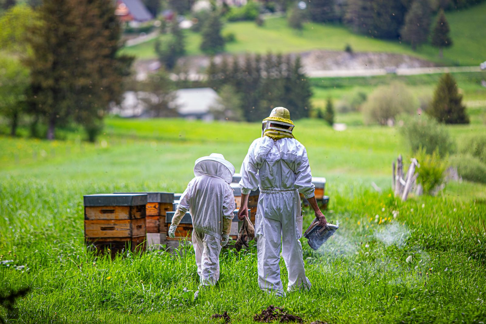

La miellerie
Grains de Miel est une exploitation apicole de Villard-de-Lans, au cœur du Parc naturel régional du Vercors.
Franck Repellin est apiculteur transhumant : ses ruches sont installées surtout dans le Vercors, et aussi en Provence. Ses miels sont issus de l’agriculture biologique.
Qui suis-je ?Vente directe à la miellerie
Mercredi
16h – 18h30
Goûter, tartines variées, tisanes et sirops.
Vendredi
16h30 – 18h30
Permanence à la miellerie.
Vacances de Noël
16h – 18h
Permanence à la miellerie.
Goûters, ateliers, formation et découverte : tout est dans le programme.
Agriculture biologique
Certifié Ecocert SAS F 32600, FR-BIO-01. Agriculture France.